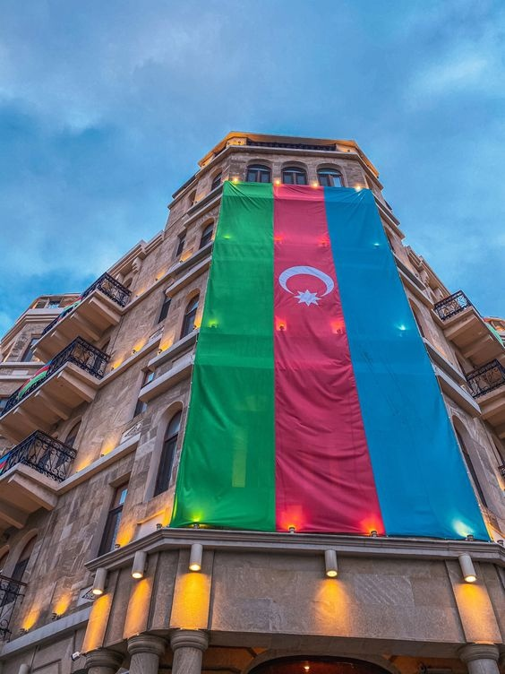

Азербайджан – удивительная страна, расположенная на пересечении Востока и Запада. Это многонациональное государство, богатое культурным наследием и великолепными природными достопримечательностями.
Одной из главных достопримечательностей Азербайджана является его столица – Баку. Этот город находится на берегу Каспийского моря и славится своими небоскребами, средневековым старым городом и прекрасными пляжами. В Баку также находятся множество музеев, парков и театров.
Еще одним замечательным местом в Азербайджане является город Гянджа. Он расположен в самом центре страны и считается ее вторым по величине городом. Гянджа – это центр азербайджанской культуры и искусства, здесь находятся множество музеев, театров и галерей.
Азербайджан также славится своими природными достопримечательностями. Одним из самых красивых мест в стране является Гобустан – национальный парк, где можно увидеть древние петроглифы, оставленные здесь еще в каменном веке. Еще одним замечательным местом является озеро Гейчай – самое большое озеро в Азербайджане, окруженное живописными горами.
Кроме того, Азербайджан славится своей кухней. Здесь можно попробовать множество блюд, которые не оставят равнодушным ни одного гурмана. Среди наиболее популярных блюд – плов, долма, баклава и шашлык.
В общем, Азербайджан – это удивительная страна, которая может предложить множество интересных мест для посещения и отдыха. Здесь можно увидеть множество культурных и природных достопримечательностей, а также попробовать местную кухню. Если вы еще не были в Азербайджане, то обязательно посетите эту удивительную страну!
Азербайджан – это не только удивительная страна с богатым культурным наследием и великолепными природными достопримечательностями, но и страна, которая имеет давнюю историю. Ее территория была населена еще в древнейшие времена, а первые государства здесь возникли в 3-2 тысячелетиях до нашей эры.
Сегодня Азербайджан – это современная страна с развитой инфраструктурой и экономикой. Здесь проводятся международные спортивные и культурные мероприятия, такие как Евровидение, Формула 1 и др.
Одним из символов Азербайджана является нефть. Это богатство страны привлекает множество иностранных инвесторов и делает Азербайджан одной из самых процветающих стран в регионе.
Кроме того, Азербайджан – это страна, где многие религии и культуры сосуществуют в мире и гармонии. Здесь живут мусульмане, православные, католики, евреи и представители других религий. Это делает Азербайджан уникальным местом, где можно узнать о разных культурах и традициях.
Культурное наследие Азербайджана также включает в себя музыку, танцы и народные ремесла. Азербайджанская музыка известна своими уникальными инструментами, такими как тар, каманча и балабан. Азербайджанские танцы – это яркое и красочное зрелище, которое покоряет сердца туристов со всего мира.
Но самое главное, что делает Азербайджан уникальным местом – это его гостеприимство. Здесь каждый турист чувствует себя как дома, встречая добрые улыбки и открытые сердца местных жителей.
Так что если вы хотите посетить удивительную страну, где можно увидеть множество культурных и природных достопримечательностей, а также попробовать местную кухню и насладиться гостеприимством местных жителей, то обязательно посетите Азербайджан!